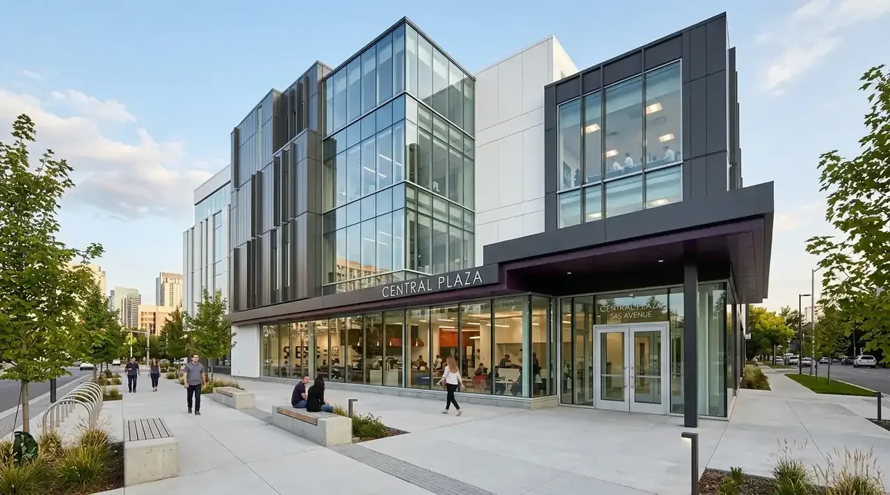

Berapa Estimasi Biaya Jasa Bangun Ruko Murah Borongan Malang Tahun 2026?
Perhitungan tarif jasa bangun ruko murah borongan Malang ditentukan oleh total luas lantai, spesifikasi pondasi pancang atau cakar ayam, serta kerumitan fasad modern bangunan komersial.
Berdasarkan analisis indeks harga pasar material dan upah tenaga kerja kawasan Malang Raya tahun 2026, rincian biaya pembangunan rumah toko (ruko) terbagi dalam beberapa kualifikasi:
| Tipe Spesifikasi Ruko | Kisaran Biaya per m² (2026) | Spesifikasi Material Utama |
|---|---|---|
| Ruko Standar (1-2 Lantai) | Rp3.500.000 - Rp4.500.000 | Pondasi cakar ayam, dinding bata ringan, lantai keramik 60x60, atap galvalum/genteng metal, pintu folding gate. |
| Ruko Menengah / Modern | Rp4.500.000 - Rp5.500.000 | Pondasi footplat + tiang pancang ringan, dinding bata ringan, lantai granit tile 60x60, kaca tempered fasad, pintu kaca + rolling door. |
| Ruko Premium / High-End | Rp5.500.000 - Rp7.500.000+ | Pondasi bore pile, lantai marmer/granit import, fasad ACP (Aluminum Composite Panel), sistem pencahayaan LED tanam, smart door lock. |
Tabel rincian estimasi biaya borongan per meter persegi bangun ruko komersial di Malang Raya 2026.
Estimasi biaya di atas membantu para pengusaha dan investor dalam menyusun skema kelayakan investasi sebelum memulai proses pengerjaan fisik di lokasi proyek. Dengan acuan anggaran yang transparan, estimasi payback period (pengembalian modal) melalui sewa unit atau operasional bisnis dapat diproyeksikan dengan sangat akurat.
- Data BPS Indeks Harga Perdagangan Besar Bangunan 2025/2026 mencatat kawasan Malang Kota, Kabupaten Malang, dan Kota Batu mengalami pertumbuhan permintaan sewa ruko komersial sebesar 14,2% per tahun.
- Memilih paket borongan all-in mampu mengamankan harga material di muka, memproteksi investor dari kenaikan harga semen dan besi tulangan di masa pengerjaan.
Mengapa Sistem Borongan Penuh Sangat Menguntungkan Bagi Proyek Ruko?
Sistem borongan penuh menjamin total pengeluaran dana konstruksi terkunci dalam dokumen kesepakatan tertulis sehingga pemilik proyek terhindar dari ketidakpastian upah kerja harian.
Kelebihan skema borongan penuh untuk pembangunan area usaha meliputi:
- Kepastian Alokasi Modal: Seluruh pembelian material bahan bangunan dan upah tukang sudah dikalkulasi secara menyeluruh sejak awal pengerjaan. Tidak ada biaya tambahan mendadak saat proyek berjalan.
- Efisiensi Durasi Pekerjaan: Pelaksana proyek memiliki target waktu pencapaian penyelesaian yang ketat dalam kurva S proyek, agar ruko dapat segera difungsikan untuk kegiatan bisnis atau disewakan.
- Kemudahan Manajemen Proyek: Investor tidak perlu menyita waktu harian untuk berbelanja material atau mengawasi tukang secara mandiri di site, karena seluruh supervisi dikendalikan oleh tim pelaksana ahli.
- Pertanggungjawaban Mutu Tunggal: Segala kendala mutu pekerjaan berada di bawah satu penanggung jawab kontraktor, memudahkan komunikasi evaluasi progres fisik.

Pengerjaan konstruksi ruko modern 2 lantai dengan fasad kaca komersial bernilai jual tinggi di Malang.
Mengapa Kontraktor Bangunan Menjadi Mitra Utama Pembangunan Ruko Anda?
Penggunaan layanan Kontraktor Bangunan profesional memastikan setiap tahapan pekerjaan fisik dari pondasi hingga finishing memenuhi standar mutu struktur sipil yang aman dan tahan lama.
Memilih penyedia jasa konstruksi terpercaya memberikan manfaat komersial jangka panjang:
- Penyusunan RAB Transparan: Menyajikan lembaran perhitungan volume pekerjaan fisik (Bill of Quantities) secara rasional tanpa ada biaya tersembunyi, lengkap dengan spesifikasi merek material yang tertera jelas.
- Pengawasan Teknik Sipil: Pengecoran beton dan penataan pembesian dipantau langsung oleh insinyur sipil berpengalaman guna menjamin kekuatan beban lantai saat menampung etalase, brankas, atau stok barang dagangan.
- Garansi Pemeliharaan Pasca-Konstruksi: Adanya jaminan garansi retensi memberi perlindungan penuh jika terjadi kebocoran atap atau keretakan halus pada dinding setelah serah terima kunci.
- Dukungan Pengurusan Legalitas PBG & SLF: Tim kami siap membantu penyusunan berkas teknis arsitektur untuk percepatan persetujuan izin di portal SIMBG Malang Raya.
Untuk mewujudkan ruko komersial yang berestetika tinggi, kokoh, dan siap hasilkan keuntungan, percayakan seluruh proses pembangunan Anda kepada Kontraktor Bangunan berpengalaman di Malang. Konsultasikan lokasi dan konsep bisnis Anda sekarang!
Apa Saja Kesalahan Fatal saat Merencanakan Konstruksi Ruko di Malang?
Kesalahan utama dalam pembangunan ruko adalah mengabaikan daya dukung tanah lokasi, salah menghitung kapasitas beban lantai dua, serta mengabaikan area parkir pengunjung.
Beberapa kekeliruan teknis yang wajib dihindari:
- ❌ Mengabaikan Pengujian Tanah (Soil Test): Struktur tanah di daerah tertentu di Malang memiliki karakteristik variatif (lereng, tanah ekspansif, atau bekas sawah) sehingga membutuhkan jenis pondasi footplat atau strauss pile yang tepat.
- ❌ Fasad Tanpa Daya Tarik Visual: Ruko komersial membutuhkan tampilan eksterior yang atraktif dengan pencahayaan fasad modern untuk menarik minat tenant atau pelanggan ritel.
- ❌ Sistem Drainase dan Saniter Buruk: Pipa pembuangan air yang terlalu kecil berisiko memicu genangan air di area parkir depan ruko saat musim hujan di Malang.
- ❌ Mengabaikan Jalur Instalasi Utilitas: Tidak menyiapkan jalur pipa AC, instalasi kabel genset darurat, serta penempatan toren air yang rapi sejak fase awal pengecoran.
FAQ seputar Jasa Bangun Ruko Malang
Kesimpulan Praktis
Memilih jasa bangun ruko murah borongan Malang adalah keputusan strategis untuk mengamankan nilai investasi aset properti Anda. Dengan perhitungan anggaran yang transparan dan dukungan tenaga ahli yang tepat, ruko idaman yang kokoh serta bernilai jual tinggi dapat terwujud sesuai jadwal.
Amankan kelancaran pembangunan proyek ruko komersial Anda bersama mitra terpercaya. Hubungi tim Kontraktor Bangunan kami sekarang untuk konsultasi gratis dan penawaran RAB presisi!